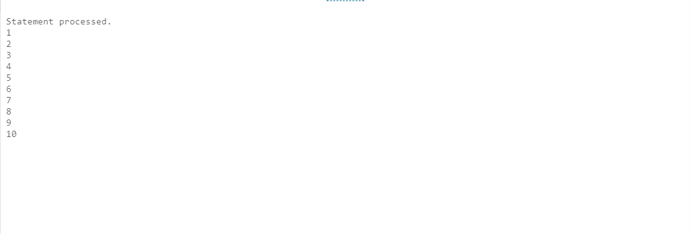
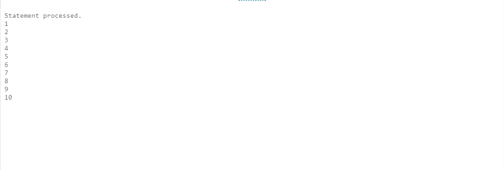
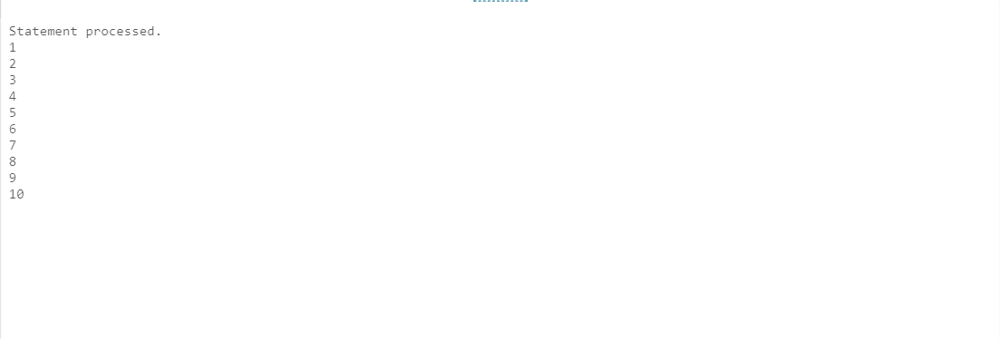

 Iterative control statement or loop control structure are used when we want to repeat the execution of one or more statement for specified number of times.
PL/SQL provides the following types of loops :
(i) Basic loop / simple loop
(ii) WHILE loop
(iii)FOR loop
The EXIT Statement : you can use the EXIT statement to terminate a loop, control passes to the next statement after the END LOOP statement. The EXIT statement must be placed inside a loop. you can also attach a WHEN clause to allows conditional termination of the loop.
LOOP
statement;
.....
EXIT [WHEN condition];
END LOOP;
DECLARE
x number := 10;
BEGIN
LOOP
dbms_output.put_line(x);
x := x + 10;
IF x > 50 THEN
exit;
END IF;
END LOOP;
dbms_output.put_line('After Exit x is: ' || x);
END;
WHILE condition
loop
statement1;
statement2;
......
END loop;
declare
num number := 1;
begin
while num<=10
loop
Dbms_output.put_line(num);
num := num+1;
end loop;
end;
 FOR variable_name in start..end
loop
statement1;
statement2;
......
END loop,
declare
num number;
fact number;
begin
fact := 1;
num := 3;
for i in 1..num
loop
fact := fact*i;
end loop;
Dbms_output.put_line('factorial of ' ||num|| ' is : '||fact);
end;